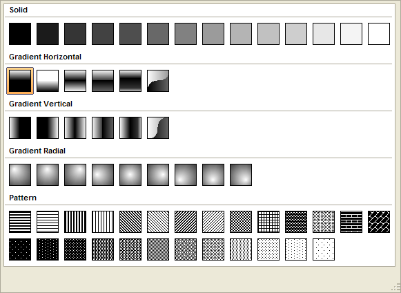
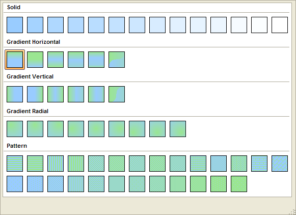

Defining Fill Style and Color
Version 8 of Alpha Five provides an expanded definition of fill styles and color. You may apply these fills to controls and layouts.
Select an option from the Style list. Click to select a pattern from the drop-down picker.

Single Color Fill Patterns
If you selected "Solid" in step 1, Select a color from the Foreground color list.
If you selected a "Gradient Horizontal", "Gradient Vertical", "Gradient Radial", or "Pattern" style in step 1:
Select a color from the Foreground color list.
Select a color from the Background color list.

Two Color Fill Patterns
Supported By
Alpha Five Version 8 and Above
Limitations
Desktop applications only.